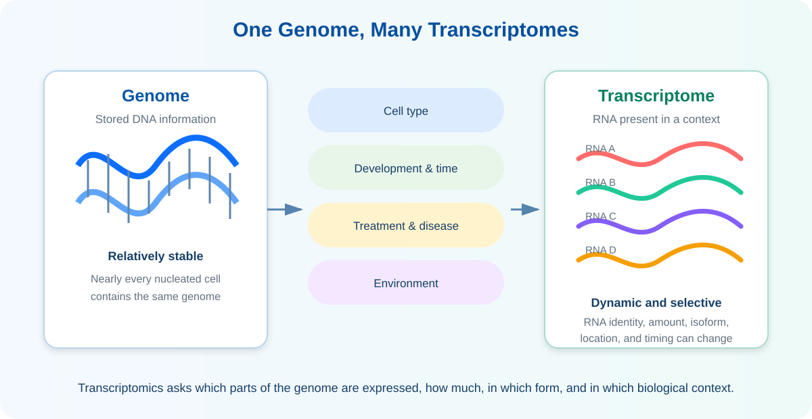
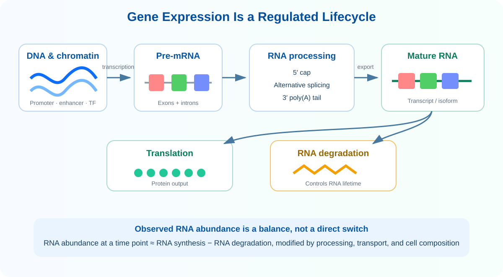

Learning Objectives
- Genome과 transcriptome의 차이와 transcriptome이 상황에 따라 달라지는 이유를 설명할 수 있다.
- Transcription, RNA processing, translation 및 RNA degradation의 관계를 설명할 수 있다.
- mRNA와 주요 non-coding RNA의 역할을 구분할 수 있다.
- Promoter, enhancer, transcription factor 및 chromatin이 유전자 발현을 조절하는 방식을 이해한다.
- Gene-level expression과 transcript/isoform-level expression의 차이를 설명할 수 있다.
- RNA abundance가 합성과 분해의 균형으로 결정된다는 점을 이해한다.
- Bulk, single-cell, spatial transcriptomics가 같은 조직을 서로 다른 해상도로 관찰한다는 점을 구분할 수 있다.
1. What is Transcriptomics?
Transcriptome은 특정 세포·조직·개체가 특정 시점과 조건에서 가지고 있는 RNA의 전체 집합입니다. Transcriptomics는 이 RNA들의 종류, 양, 구조와 변화를 전체적으로 측정하고 해석하는 분야입니다. Genome이 비교적 안정적인 정보의 저장소라면 transcriptome은 세포 종류, 발생 단계, 질환, 치료와 환경에 따라 지속적으로 달라지는 동적인 상태입니다.

| Genome | Transcriptome | |
|---|---|---|
| 주요 분자 | DNA | RNA |
| 시간적 특성 | 한 개인의 체세포에서 비교적 안정적 | 시간, 상태와 자극에 따라 변화 |
| 주요 질문 | 어떤 유전정보와 변이가 존재하는가? | 어떤 gene·transcript가 언제, 어디서, 얼마만큼 발현되는가? |
| 대표 자료 | WGS, WES, panel, SNP array | Expression microarray, bulk RNA-seq, scRNA-seq, spatial transcriptomics |
2. From DNA to RNA
고전적인 central dogma는 sequence information이 일반적으로 DNA → RNA → protein 방향으로 전달된다는 틀을 제시합니다.1 그러나 모든 RNA가 protein으로 번역되는 것은 아니며, 같은 DNA에서 여러 RNA isoform이 만들어질 수 있고 RNA의 안정성·위치·번역 효율도 조절됩니다. 따라서 RNA abundance는 DNA에 적힌 유전자 수를 그대로 세는 값이 아니라, 여러 조절단계가 합쳐진 결과입니다.

3. RNA Molecules
Transcriptome에는 mRNA뿐 아니라 ribosome 구성, translation, gene regulation과 genome defense에 관여하는 다양한 non-coding RNA가 포함됩니다. 연구 목적과 library preparation 방법에 따라 실제로 관찰되는 RNA 종류가 달라집니다.
| RNA 종류 | 주요 역할 | 측정 시 고려사항 |
|---|---|---|
| mRNA | Protein을 암호화하는 transcript | Poly(A) selection으로 주로 포획되며 exon·isoform 분석의 중심 |
| rRNA | Ribosome의 구조 및 촉매 기능 | Total RNA의 큰 비중을 차지하므로 mRNA 분석에서는 흔히 제거 |
| tRNA | Amino acid를 ribosome으로 운반 | 짧고 강한 이차구조와 modification 때문에 일반 RNA-seq에서 편향 가능 |
| lncRNA | 200 nt보다 긴 non-coding transcript로 조절·구조적 역할 | 발현량이 낮거나 조직 특이적일 수 있고 annotation에 따라 결과가 달라짐 |
| miRNA | 표적 mRNA 안정성과 translation을 조절하는 small RNA | 일반 mRNA library가 아니라 small RNA 전용 library가 필요 |
| snRNA / snoRNA | Splicing과 rRNA processing 등에 관여 | Total RNA 또는 특수 library에서 더 잘 관찰됨 |
4. Regulation of Gene Expression
같은 genome을 가진 세포가 서로 다른 기능을 갖는 이유는 필요한 gene을 선택적으로 발현하기 때문입니다. Transcription factor는 특정 DNA motif에 결합하고, promoter와 enhancer는 transcription machinery의 접근과 활성을 조절합니다. DNA methylation, histone modification 및 chromatin accessibility는 이 조절요소에 접근할 수 있는지를 바꿉니다.
| 조절 단계 | 대표 기전 | RNA 자료에서 보일 수 있는 결과 |
|---|---|---|
| Chromatin | Accessibility, histone modification, DNA methylation | Gene이 전사 가능한 상태인지에 영향 |
| Transcription | TF, promoter, enhancer, RNA polymerase recruitment | 새 RNA 합성률 변화 |
| Post-transcription | Splicing, editing, cleavage, polyadenylation | Isoform과 transcript 끝 위치 변화 |
| RNA stability | RNA-binding protein, miRNA, decay pathway | 같은 합성률에서도 abundance가 달라짐 |
| Translation | Ribosome loading, initiation control | RNA 양과 protein 양이 일치하지 않을 수 있음 |
5. RNA Processing and Isoforms
Eukaryotic pre-mRNA는 5′ capping, intron 제거와 exon 연결, 3′ cleavage 및 poly(A) tail 추가를 거쳐 성숙합니다. Alternative splicing, alternative promoter 및 alternative polyadenylation으로 하나의 gene에서 여러 transcript가 만들어질 수 있습니다. 이 transcript들은 coding sequence, untranslated region, 안정성, 위치 또는 protein domain이 다를 수 있습니다.
한 gene에 속한 여러 transcript의 신호를 합쳐 전체 abundance를 요약합니다. 일반적인 differential gene expression의 입력입니다.
같은 gene에서 만들어진 transcript별 abundance와 isoform switching을 평가합니다. 더 많은 read 정보와 명확한 annotation이 필요합니다.
6. What Do We Measure?
실험이 직접 관찰하는 것은 “gene activity”라는 추상적 개념이 아니라 probe intensity, sequence read 또는 UMI count입니다. 이 기술적 측정치를 annotation과 통계모형을 이용해 gene 또는 transcript abundance로 해석합니다. RNA-seq는 transcript에서 유래한 cDNA fragment를 sequencing하고, 각 gene 또는 transcript에 대응하는 read 수를 이용해 abundance를 추정합니다.2
| 방법 | 관찰 단위 | 주요 장점 | 주요 한계 |
|---|---|---|---|
| qPCR | 선택한 target의 amplification signal | 민감하고 빠른 targeted validation | 소수 target 중심이며 primer 설계 의존 |
| Expression microarray | 미리 설계한 probe의 hybridization intensity | 표준화된 많은 sample 분석 | Known target 중심, cross-hybridization, 제한된 dynamic range |
| Bulk RNA-seq | Sample 전체의 read/fragment count | 넓은 dynamic range, novel transcript·splicing 탐색 | 세포 혼합물의 평균이며 library·mapping bias 존재 |
| Single-cell RNA-seq | Cell barcode와 UMI로 구분한 cell × gene count | Cell type과 state의 이질성 분리 | Sparse count, dissociation bias, donor-aware 분석 필요 |
| Spatial transcriptomics | RNA abundance와 조직 좌표 | 해부학적 구조와 expression 연결 | 기술별 해상도·gene coverage·segmentation 차이 |
7. Biological and Technical Variation
발현 차이는 실제 biology와 실험과정의 변동이 함께 만든 결과입니다. Transcriptomics의 첫 단계는 이 둘을 구분할 수 있는 연구설계를 만드는 것입니다.
References
- Crick F. Central dogma of molecular biology. Nature. 1970;227:561–563.
- Mortazavi A, Williams BA, McCue K, Schaeffer L, Wold B. Mapping and quantifying mammalian transcriptomes by RNA-Seq. Nature Methods. 2008;5:621–628.
- Wang Z, Gerstein M, Snyder M. RNA-Seq: a revolutionary tool for transcriptomics. Nature Reviews Genetics. 2009;10:57–63.
- ENCODE Project Consortium. An integrated encyclopedia of DNA elements in the human genome. Nature. 2012;489:57–74.
- Conesa A, et al. A survey of best practices for RNA-seq data analysis. Genome Biology. 2016;17:13.
Key Takeaways
- Transcriptome은 특정 세포가 특정 시점과 조건에서 가진 RNA의 전체 집합이며 genome보다 동적입니다.
- Gene expression은 transcription만이 아니라 processing, localization, translation 및 degradation의 영향을 받습니다.
- 모든 RNA가 protein을 만들지는 않으며 다양한 non-coding RNA가 조절과 구조적 기능을 수행합니다.
- 하나의 gene에서 여러 transcript isoform이 만들어질 수 있어 gene-level과 transcript-level 결과는 서로 다른 질문에 답합니다.
- 측정 기술과 library preparation에 따라 관찰되는 RNA 종류와 해상도가 달라집니다.
- 발현 차이를 해석하려면 biological variation과 technical variation을 연구설계 단계부터 구분해야 합니다.
Check Your Understanding
- 같은 genome을 가진 간세포와 면역세포가 서로 다른 transcriptome을 갖는 이유는 무엇인가요?
- RNA abundance가 높다는 사실만으로 transcription rate가 높다고 단정할 수 없는 이유는 무엇인가요?
- Poly(A)-selected RNA-seq와 rRNA-depleted total RNA-seq가 관찰하는 RNA 집합은 어떻게 다른가요?
- Gene-level expression이 변하지 않아도 isoform-level 변화가 존재할 수 있는 예를 설명해 보세요.
- Bulk RNA-seq, scRNA-seq 및 spatial transcriptomics가 각각 가장 잘 답하는 질문은 무엇인가요?